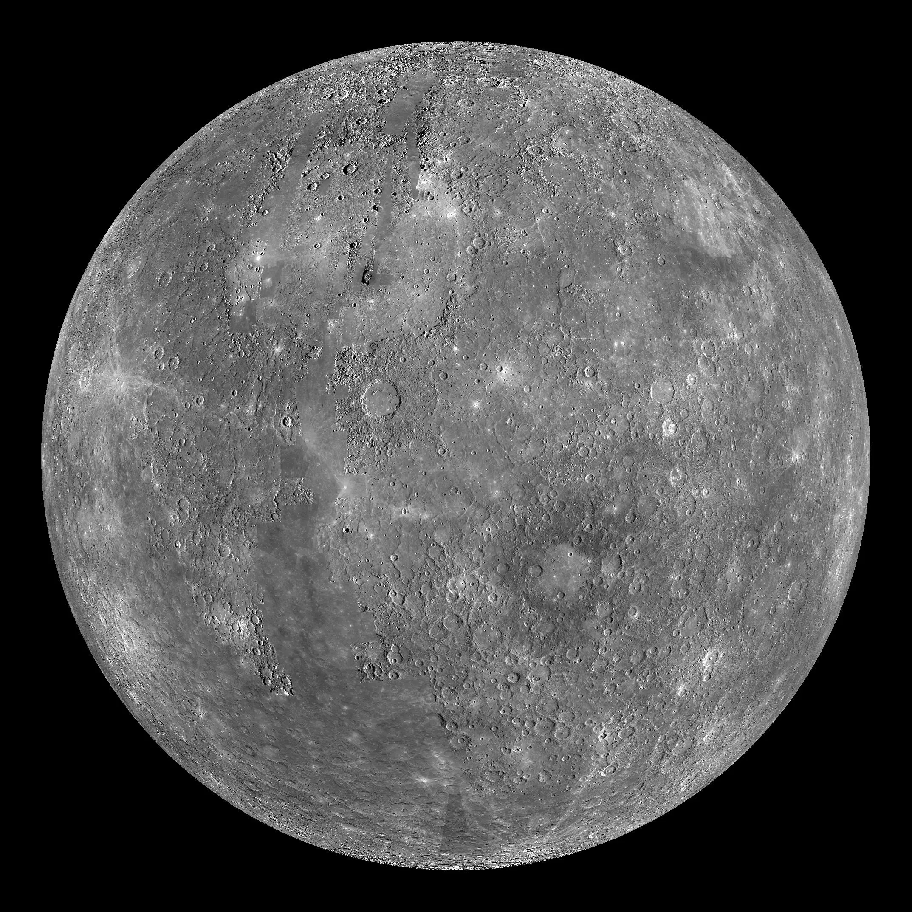
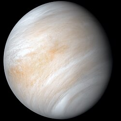
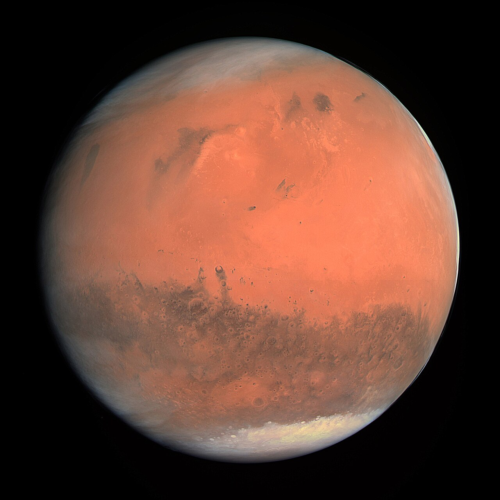
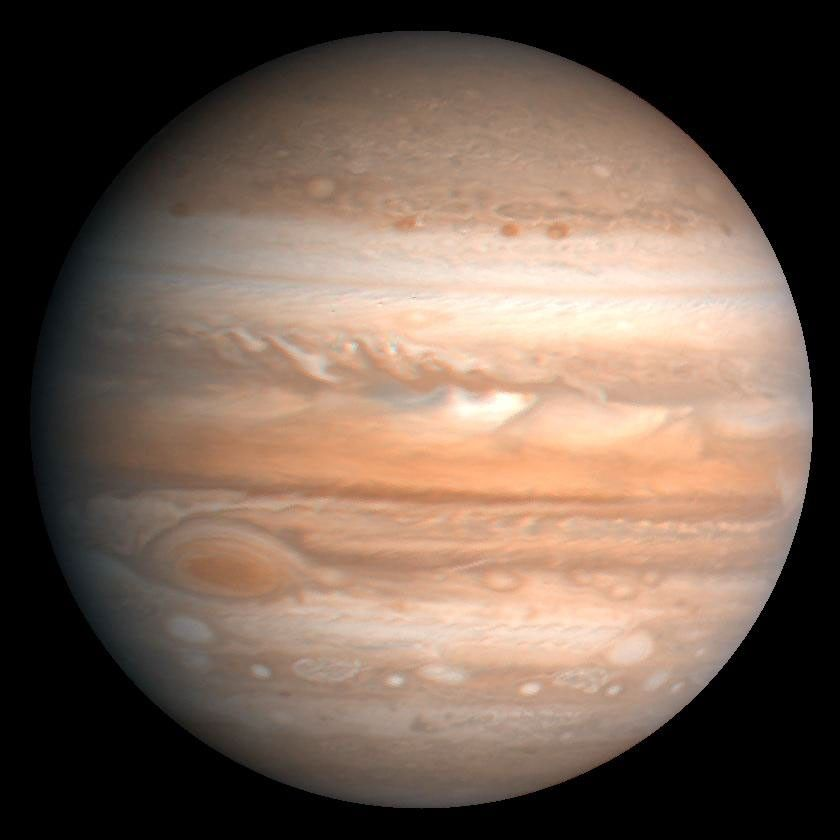
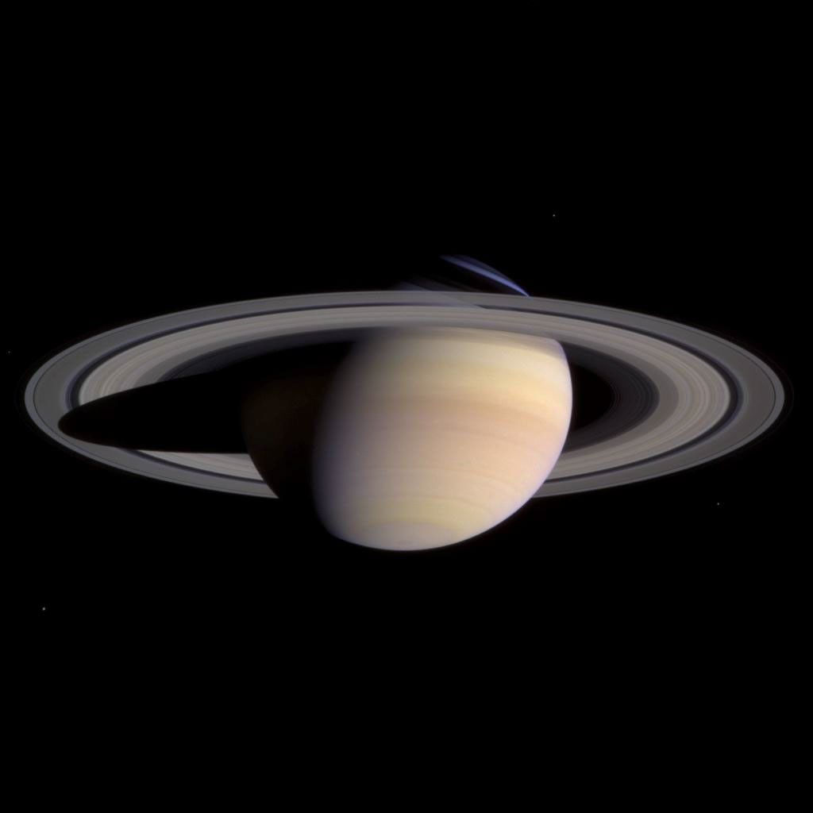
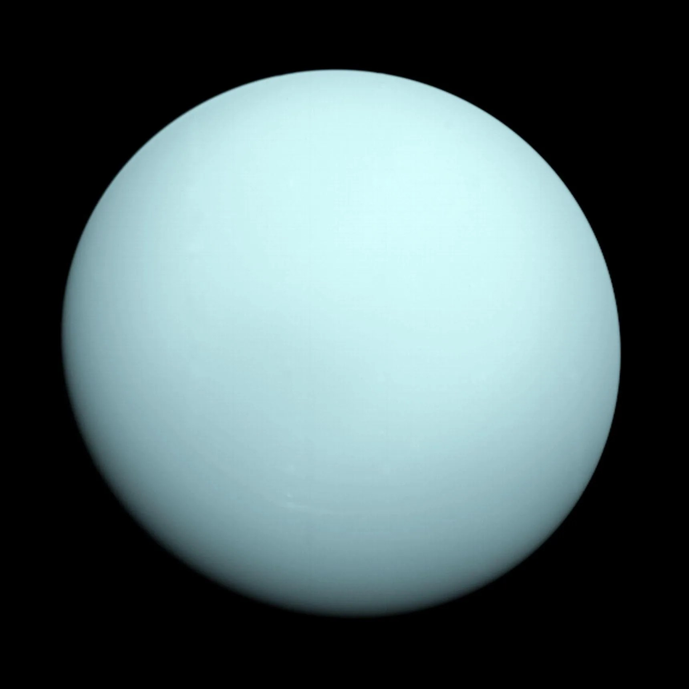
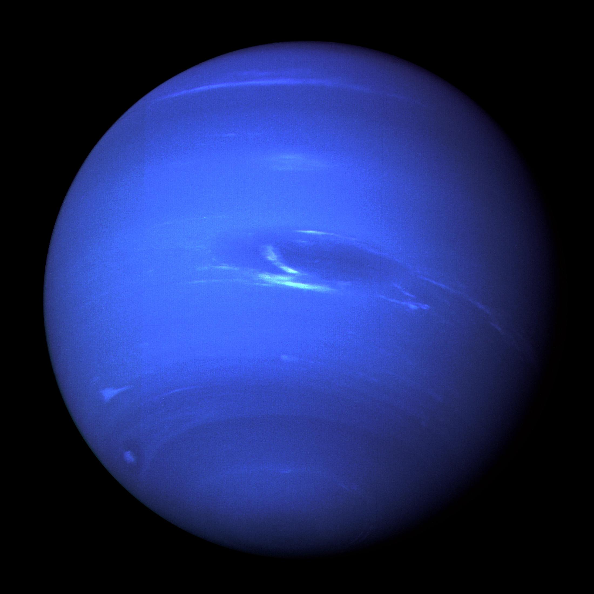

01 · Rocky planet
Mercury
The smallest planet and the closest world to the Sun, with a heavily cratered surface.
A year on Mercury lasts only 88 Earth days.
Our cosmic neighborhood
Each planet is a world of extremes—from scorching clouds and frozen winds to oceans filled with life.
Drag or swipe to travel between worlds

The smallest planet and the closest world to the Sun, with a heavily cratered surface.
A year on Mercury lasts only 88 Earth days.

Thick clouds trap heat, making Venus the hottest planet in our Solar System.
Venus rotates in the opposite direction to most planets.

Our ocean world is the only place currently known to support living things.
About 71% of Earth's surface is covered by water.

A cold desert world with iron-rich soil, giant volcanoes, and signs of ancient rivers.
Olympus Mons is the largest volcano in the Solar System.

The largest planet is a swirling world of hydrogen, helium, and powerful storms.
Its Great Red Spot is a storm wider than Earth.

Countless pieces of ice and rock create Saturn's spectacular ring system.
Saturn is less dense than water.

Methane gives this distant, frigid planet its calm blue-green appearance.
Uranus rotates on its side at a 98-degree tilt.

The outermost planet is dark, cold, and swept by supersonic winds.
Winds on Neptune can exceed 2,000 km/h.
The long way around
Our Solar System reaches far beyond Neptune into a vast region of icy bodies. Even after centuries of observation, we are still learning how this remarkable family of worlds formed.